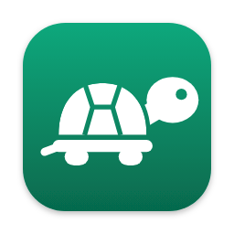
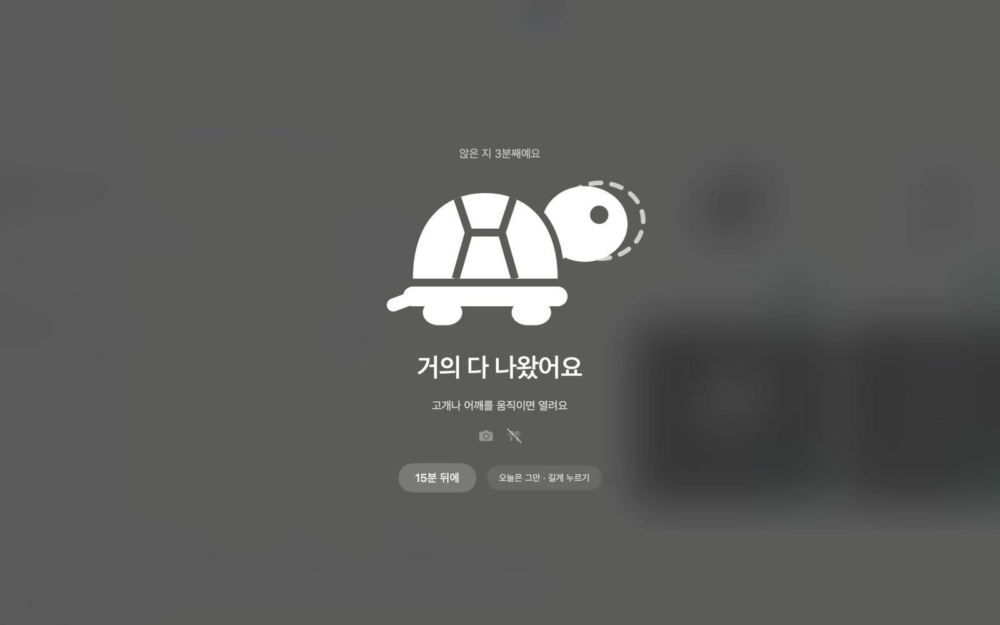
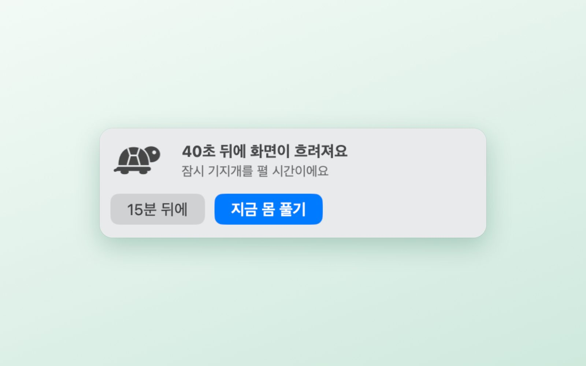
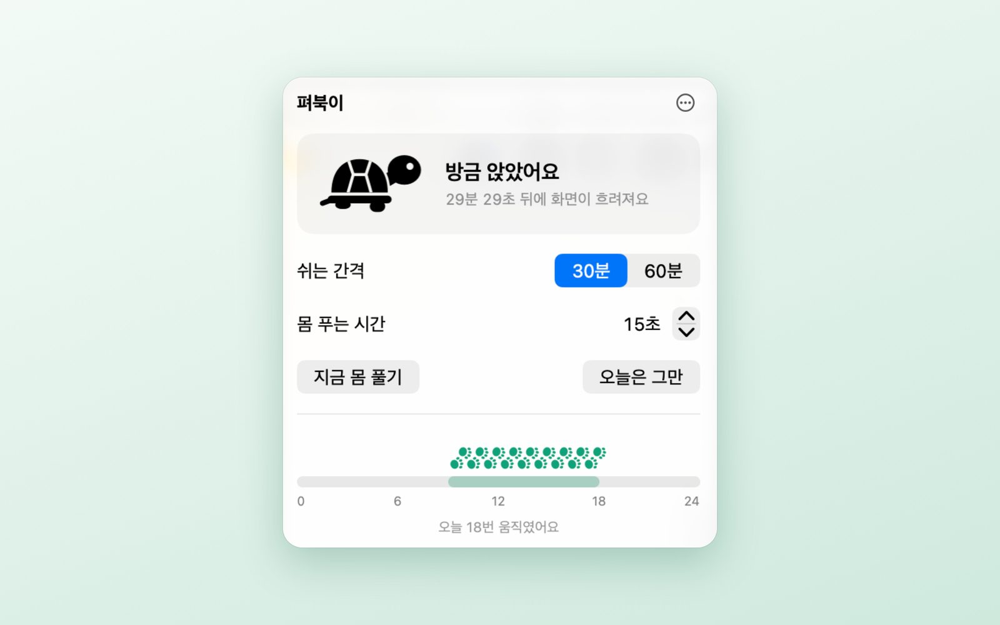
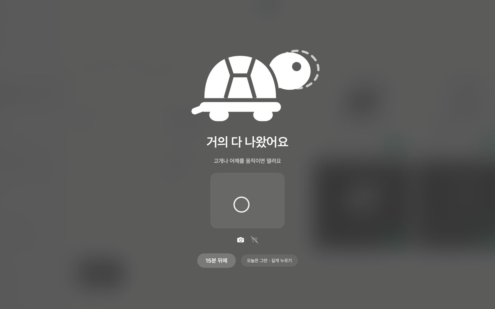
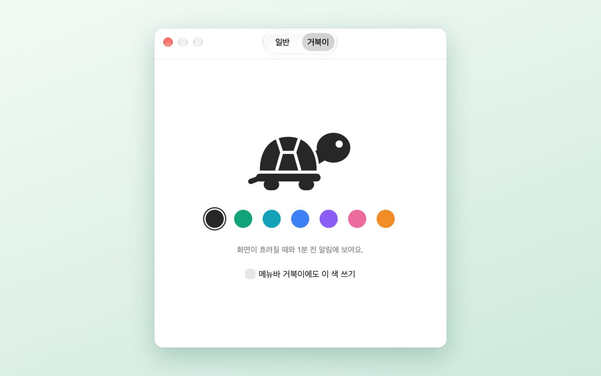

흐려지기 전에 먼저 알려줘요
화면이 흐려지기 1분 전에 작은 알림이 먼저 떠요. 하던 일을 갑자기 끊지 않아요.
- 바로 몸을 풀거나 15분 미룰 수 있어요.
- 통화나 회의 중에는 기다려요. 마이크를 쓰는 동안에는 흐려지지 않아요.
- 급한 날에는 “오늘은 그만”으로 하루를 쉬어요.

움직이면 화면이 열려요
오래 앉아 있으면 화면이 잠깐 흐려지고, 몸을 움직이면 다시 열리는 Mac 앱이에요.
Mac App Store 심사 중 · 곧 만나요
메뉴바에 거북이 한 마리가 살아요. 자리에 앉으면 거북이도 걷기 시작하고, 오래 앉아 있을수록 걸음이 느려지다가 끝내 목을 움츠려요. 그러면 화면이 잠깐 흐려져요.
화면이 흐려지기 1분 전에 작은 알림이 먼저 떠요. 하던 일을 갑자기 끊지 않아요.

메뉴바의 거북이를 누르면 오늘 하루가 띠 하나로 보여요.

카메라는 화면이 흐려진 동안에만 켜지고, 움직였는지만 확인해요.

화면이 흐려질 때와 1분 전 알림에 보이는 거북이의 색을 고를 수 있어요. 메뉴바 거북이에도 같은 색을 쓸 수 있어요.

가입도 로그인도 없어요. 이름이나 이메일을 묻지 않아요.
기록과 설정은 이 Mac에만 있어요. 서버로 보내지 않아요.
광고도, 사용 행태를 분석하는 도구도 넣지 않았어요.
흐려진 화면의 “15분 뒤에”를 누르거나, “오늘은 그만”을 2초 동안 누르고 있으면 돼요. 화면이 흐려지는 것은 보안 잠금이 아니에요.
화면이 흐려진 동안에만 켜지고, 움직였는지만 확인해요. 영상은 저장하지 않고 Mac 밖으로 나가지 않아요. 흐려진 화면 오른쪽 아래의 눈 아이콘을 누르면 앱이 보는 것을 선으로 볼 수 있어요.
네. 설정 → 일반에서 “카메라로 움직임 확인하기”를 끄면 돼요. 그때는 버튼을 누르고 몸을 풀어요.
아이폰과 이어 쓰는 기능은 준비 중이에요.
궁금한 점이나 문제가 있으면 메일로 알려주세요. 앱의 ⋯ 메뉴에 있는 “문제 보고”를 누르면 앱 버전이 함께 적혀요.